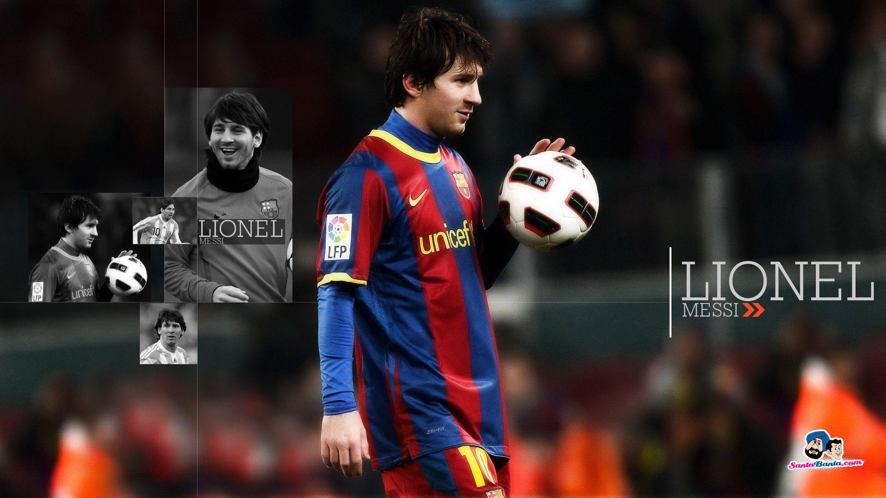
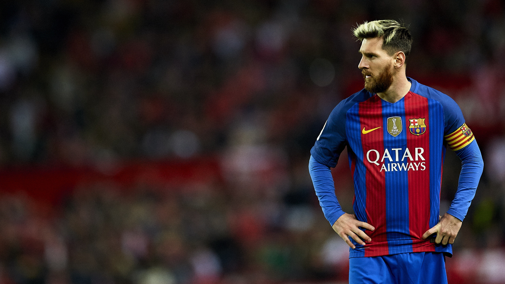

Lionel Andrés Messi Cuccittini[note 1] (Spanish pronunciation: [ljoˈnel anˈdɾez ˈmesi] (About this soundlisten);[A] born 24 June 1987) is an Argentine professional footballer who plays as a forward and captains both Spanish club Barcelona and the Argentina national team. Often considered the best player in the world and widely regarded as one of the greatest players of all time, Messi has won a record six Ballon d'Or awards,[note 2] and a record six European Golden Shoes. He has spent his entire professional career with Barcelona, where he has won a club-record 34 trophies, including ten La Liga titles, four UEFA Champions League titles and six Copas del Rey. A prolific goalscorer and a creative playmaker, Messi holds the records for most goals in La Liga (438), a La Liga and European league season (50), most hat-tricks in La Liga (36) and the UEFA Champions League (8), and most assists in La Liga (181) and the Copa América (12). He has scored over 700 senior career goals for club and country.

Born and raised in central Argentina, Messi relocated to Spain to join Barcelona at age 13, for whom he made his competitive debut aged 17 in October 2004. He established himself as an integral player for the club within the next three years, and in his first uninterrupted season in 2008–09 he helped Barcelona achieve the first treble in Spanish football; that year, aged 22, Messi won his first Ballon d'Or. Three successful seasons followed, with Messi winning three consecutive Ballons d'Or, making him the first player to win the award four times. During the 2011–12 season, he set the La Liga and European records for most goals scored in a single season, while establishing himself as Barcelona's all-time top scorer. The following two seasons, Messi finished second for the Ballon d'Or behind Cristiano Ronaldo (his perceived career rival), before regaining his best form during the 2014–15 campaign, becoming the all-time top scorer in La Liga and leading Barcelona to a historic second treble, after which he was awarded a fifth Ballon d'Or in 2015. Messi assumed the captaincy of Barcelona in 2018, and in 2019 he secured a record sixth Ballon d'Or. An Argentine international, Messi is his country's all-time leading goalscorer. At youth level, he won the 2005 FIFA World Youth Championship, finishing the tournament with both the Golden Ball and Golden Shoe, and an Olympic gold medal at the 2008 Summer Olympics. His style of play as a diminutive, left-footed dribbler drew comparisons with his compatriot Diego Maradona, who described Messi as his successor. After his senior debut in August 2005, Messi became the youngest Argentine to play and score in a FIFA World Cup during the 2006 edition, and reached the final of the 2007 Copa América, where he was named young player of the tournament. As the squad's captain from August 2011, he led Argentina to three consecutive finals: the 2014 FIFA World Cup, for which he won the Golden Ball, and the 2015 and 2016 Copas América. After announcing his international retirement in 2016, he reversed his decision and led his country to qualification for the 2018 FIFA World Cup, and a third-place finish at the 2019 Copa América. One of the most famous athletes in the world, Messi has been sponsored by sportswear company Adidas since 2006 and has established himself as their leading brand endorser. According to France Football, he was the world's highest-paid footballer for five years out of six between 2009 and 2014, and was ranked the world's highest-paid athlete by Forbes in 2019. Messi was among Time's 100 most influential people in the world in 2011 and 2012. In 2020, he was awarded the Laureus World Sportsman of the Year.
Read More